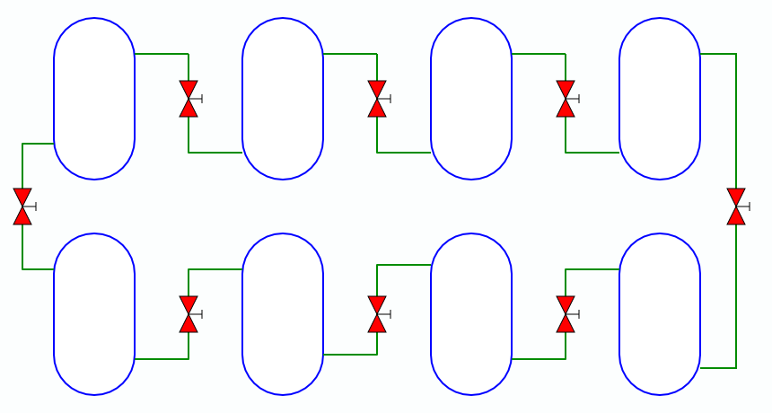

MBLogic
for an open world in automation
MBLogic
for an open world in automation
Help - HMI Background Images
Overview:
Static background images can be added to the SVG section of the HMI.
Background Images:

It is sometimes desirable to add a background image to the SVG portion of the HMI. This can for example be used to illustrate a plant or machine layout which is then overlaid with normal SVG elements. A PNG or JPEG image may be used when the original drawing is not available in SVG format.
SVG
<svg xmlns="http://www.w3.org/2000/svg" version="1.1" baseProfile="full" width="1000px" height="560px" xmlns:html="http://www.w3.org/1999/xhtml" xmlns:xul="http://www.mozilla.org/keymaster/gatekeeper/there.is.only.xul"> <!-- Various other SVG definitions can go here, so long as they do not need to be displayed. The background image must be the first thing to be displayed as it will cover anything else. --> <!-- This adds an image to the background. --> <image xlink:href="processdrawing.png" width="850" height="600"/>
How it works:
The last line in the above example imports the image and then scales it (width and height). Graphics are displayed in the order in which they are imported or (in the case of SVG) drawn. This means that a background image should be imported first before drawing the SVG elements on top of it.